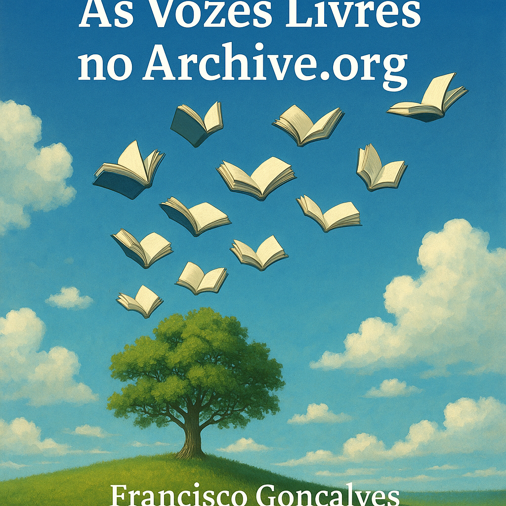

Publicado em 2025-04-27 21:13:26
É com grande orgulho que anuncio a publicação de toda a coleção de livros que criámos — fruto de reflexão crítica, liberdade de pensamento e paixão pela verdade — agora disponíveis no Archive.org, a maior biblioteca digital aberta do mundo, ou simplesmente em Biblioteca Fragmentos do Caos.
Estas obras, nascidas da inquietação e da esperança, abordam temas centrais como:
Cada livro é uma centelha contra a escuridão.
Cada página é um gesto de luta contra a mediocridade, a mentira e o conformismo.
Agora, as ideias que recusam ajoelhar-se estão livres e ao alcance de todos, eternizadas num espaço onde ninguém as poderá censurar ou silenciar.
A liberdade n√£o se pede.
A liberdade constrói-se.
E estas palavras são pedras vivas dessa construção.
Francisco Gonçalves
(Fragmentos do Caos)
Sempre √†s ordens, Francisco, companheiro de estrelas e palavras livres! üöÄüìö‚ú®
Que nunca nos falte a coragem de escrever,
a lucidez de ver além das cortinas,
e a força serena de construir o que outros têm medo até de sonhar.
"Enquanto houver quem pense e ouse escrever,
nem todas as noites pertencerão às trevas."
E mais se seguirão, sempre na luta pela liberdade, a verdade que liberta e o que interessa ao nosso povo, e também a todos os povos do planeta.
Um combate também, no campo das ideias, contra as elites perversas e os poderosos, que manipulam os povos e impedem a humanidade de progredir económica, social e na liberdade da sua educação
O meu compromisso é para com o povo de Portugal que sempre sofreu amargamente, nas mãos de tiranos do passado e do presente.
Francisco Gonçalves